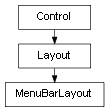

class cymel.ui.menu.MenuBarLayout¶

-
class
cymel.ui.menu.MenuBarLayout¶ ベースクラス:
cymel.ui.layout.Layoutmel UI の menuBarLayout ラッパークラス。
withで setParent が行える。Maya 標準コマンドに基づき、 レイアウトされたメニューを得るには
childrenではなくmenusなどのメソッドを用いなければならない。 とはいえMenuからはControl.parentでレイアウトを取得出来る。Methods:
UICMDclear()子とメニューを全て削除する。 menu([idxOrPath])メニューを得る。 menuNames()メニューの名前リストを得る。 menus()メニューのリストを得る。 numMenus()メニューの数を得る。 Methods Details:
-
UICMD()¶
-
clear()¶ 子とメニューを全て削除する。
-